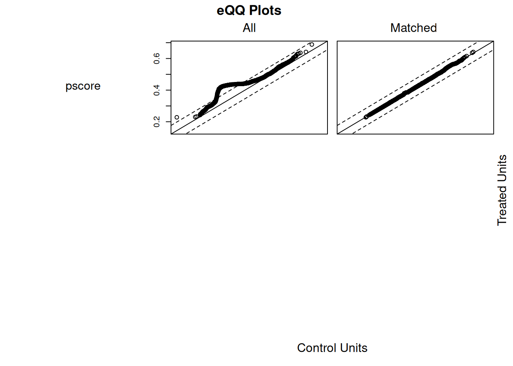
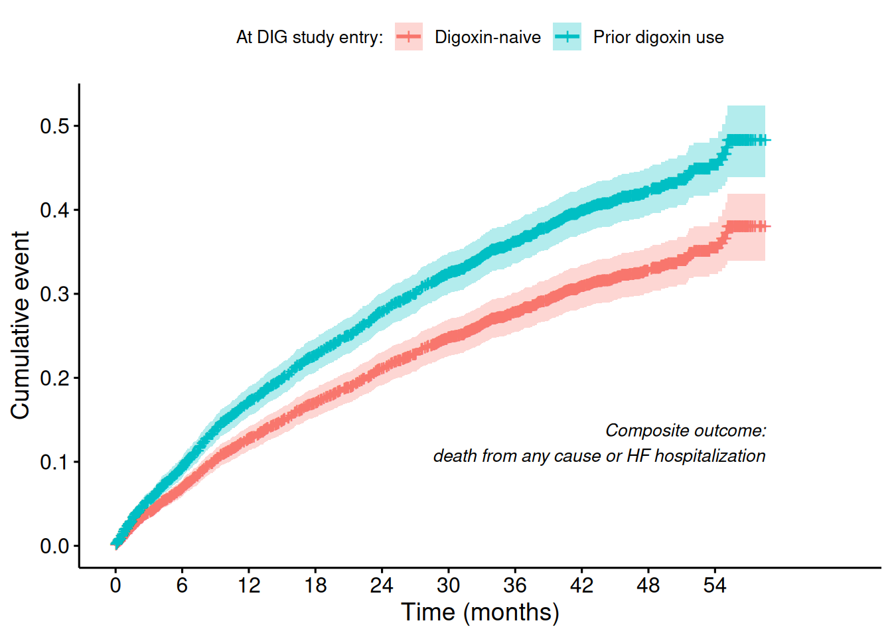

Celem niniejszej analizy jest ocena, czy wcześniejsze stosowanie digoksyny przed randomizacją miało wpływ na wyniki kliniczne pacjentów leczonych digoksyną w ramach badania DIG. W szczególności analizujemy, czy pacjenci z wcześniejszą ekspozycją na digoksynę różnią się pod względem ryzyka zgonu lub hospitalizacji z powodu niewydolności serca w porównaniu do pacjentów, którzy nie przyjmowali wcześniej digoksyny.
Z medycznego punktu widzenia istotne jest, czy długotrwałe stosowanie digoksyny może prowadzić do zmniejszenia skuteczności leku (np. poprzez rozwój tolerancji farmakologicznej) lub zwiększać ryzyko działań niepożądanych.
Pacjenci wcześniej leczeni digoksyną mogą stanowić populację o bardziej zaawansowanej lub trudniejszej do kontrolowania niewydolności serca, co może wpływać na rokowanie niezależnie od leczenia w ramach badania.
Ze względu na brak randomizacji względem wcześniejszego stosowania digoksyny, zastosowanie metody propensity score matching pozwala zredukować wpływ czynników zakłócających (confounding by indication) i umożliwia bardziej wiarygodne porównanie wyników pomiędzy grupami.
Propensity score model
Code
ps_model_forumla <-as.formula("diguse ~ age + sex + race + ejf_per * chestx + bmi + functcls + diuret + aceinhib + prevmi + diabetes + hyperten")ps_model <-glm(ps_model_forumla, data = df_trtmt, family = binomial)concordance(ps_model)
Abbreviations: CI = Confidence Interval, OR = Odds Ratio
Matching
Code
df_trtmt$pscore <-predict(ps_model, type ="response")matchit_obj <- MatchIt::matchit(diguse ~ pscore,data = df_trtmt, method ="nearest", ratio =1, caliper =0.1)df_matched <- MatchIt::match.data(matchit_obj)
Matching evaluation
Code
summary(matchit_obj)
Call:
MatchIt::matchit(formula = diguse ~ pscore, data = df_trtmt,
method = "nearest", caliper = 0.1, ratio = 1)
Summary of Balance for All Data:
Means Treated Means Control Std. Mean Diff. Var. Ratio eCDF Mean
distance 0.4573 0.4281 0.3832 0.7214 0.0878
pscore 0.4576 0.4279 0.3905 0.6986 0.0878
eCDF Max
distance 0.1357
pscore 0.1357
Summary of Balance for Matched Data:
Means Treated Means Control Std. Mean Diff. Var. Ratio eCDF Mean
distance 0.4549 0.4538 0.0149 1.0247 0.0041
pscore 0.4553 0.4542 0.0144 1.0231 0.0041
eCDF Max Std. Pair Dist.
distance 0.0231 0.0155
pscore 0.0231 0.0150
Sample Sizes:
Control Treated
All 1899 1498
Matched 1471 1471
Unmatched 428 27
Discarded 0 0
Code
plot(matchit_obj, type ="qq")

Code
#love.plot(matchit_obj)
Pre-matching
Code
ps_model_predictors <-all.vars(formula(ps_model_forumla)[[3]]) # right-hand side variables of the formuladf_trtmt %>%select(all_of(ps_model_predictors), diguse) %>%tbl_summary(by = diguse, statistic =all_continuous() ~"{mean} ± {sd}", missing ="no") %>%add_difference()
Characteristic
0
N = 1,8991
1
N = 1,4981
Difference2
95% CI2
p-value2
calculated: age at randomization
64 ± 11
63 ± 11
0.40
-0.34, 1.1
0.3
q4: sex, 1=male 2=female
0.06
0.00, 0.13
1
1,499 (79%)
1,143 (76%)
2
400 (21%)
355 (24%)
q5: race, 1=white 2=nonwhite
0.03
-0.04, 0.10
1
1,635 (86%)
1,275 (85%)
2
264 (14%)
223 (15%)
q3: ejection fraction (percent)
29 ± 9
28 ± 9
1.1
0.48, 1.7
<0.001
q6: chest x-ray (ct-ratio)
0.53 ± 0.07
0.54 ± 0.08
-0.01
-0.01, 0.00
<0.001
calculated: body mass index (kg/m*m)
27.0 ± 5.1
27.0 ± 5.3
0.02
-0.34, 0.37
>0.9
q23: nyha functional class
0.10
0.03, 0.17
1
268 (14%)
198 (13%)
2
1,045 (55%)
768 (51%)
3
549 (29%)
493 (33%)
4
37 (1.9%)
39 (2.6%)
q31: other diuretics
0.31
0.25, 0.38
0
520 (27%)
221 (15%)
1
1,379 (73%)
1,277 (85%)
q32: ace inhibitors
0.03
-0.04, 0.09
0
117 (6.2%)
83 (5.5%)
1
1,782 (94%)
1,415 (94%)
q25: previous myocardial infarction
0.01
-0.06, 0.07
0
672 (35%)
526 (35%)
1
1,227 (65%)
972 (65%)
q27: history of diabetes
0.09
0.02, 0.16
0
1,328 (70%)
1,108 (74%)
1
571 (30%)
390 (26%)
q28: history of hypertension
0.04
-0.03, 0.11
0
1,061 (56%)
809 (54%)
1
838 (44%)
689 (46%)
Abbreviation: CI = Confidence Interval
1Mean ± SD; n (%)
2Welch Two Sample t-test; Standardized Mean Difference
Post-Matching
Code
ps_model_predictors <-all.vars(formula(ps_model_forumla)[[3]]) # right-hand side variables of the formuladf_matched %>%select(all_of(ps_model_predictors), diguse) %>%tbl_summary(by = diguse, statistic =list(all_continuous() ~"{mean} ± {sd}",all_categorical() ~"{n} ({p}%)" ),missing ="no",type =all_categorical() ~"categorical" ) %>%add_n() %>%add_difference()
Characteristic
N
0
N = 1,4711
1
N = 1,4711
Difference2
95% CI2
p-value2
age
2,942
63 ± 11
63 ± 11
0.03
-0.77, 0.84
>0.9
sex
2,942
0.00
-0.07, 0.08
1
1,133 (77%)
1,130 (77%)
2
338 (23%)
341 (23%)
race
2,942
0.02
-0.05, 0.09
1
1,266 (86%)
1,257 (85%)
2
205 (14%)
214 (15%)
ejf_per
2,942
28 ± 9
28 ± 9
0.12
-0.51, 0.75
0.7
chestx
2,942
0.54 ± 0.07
0.54 ± 0.07
0.00
-0.01, 0.00
0.6
bmi
2,942
27.0 ± 5.0
27.0 ± 5.3
0.05
-0.32, 0.42
0.8
functcls
2,942
0.02
-0.06, 0.09
1
189 (13%)
196 (13%)
2
770 (52%)
760 (52%)
3
478 (32%)
480 (33%)
4
34 (2.3%)
35 (2.4%)
diuret
2,942
0.01
-0.06, 0.08
0
225 (15%)
221 (15%)
1
1,246 (85%)
1,250 (85%)
aceinhib
2,942
0.00
-0.07, 0.07
0
83 (5.6%)
83 (5.6%)
1
1,388 (94%)
1,388 (94%)
prevmi
2,942
0.01
-0.06, 0.09
0
505 (34%)
514 (35%)
1
966 (66%)
957 (65%)
diabetes
2,942
0.01
-0.06, 0.08
0
1,090 (74%)
1,082 (74%)
1
381 (26%)
389 (26%)
hyperten
2,942
0.01
-0.06, 0.08
0
795 (54%)
802 (55%)
1
676 (46%)
669 (45%)
Abbreviation: CI = Confidence Interval
1Mean ± SD; n (%)
2Welch Two Sample t-test; Standardized Mean Difference
Cox model on matched data
Code
dwhf_surv_matched <-with(df_matched, Surv(dwhfdays,dwhf))cox_matched <- rms::cph(dwhf_surv_matched ~ diguse, data = df_matched, x =TRUE, y =TRUE, surv =TRUE)HR <-exp(coef(cox_matched))HR_ci95lo <-exp(confint(cox_matched)[1])HR_ci95hi <-exp(confint(cox_matched)[2])summary(cox_matched)
Effects Response : dwhf_surv_matched
Factor Low High Diff. Effect S.E. Lower 0.95 Upper 0.95
diguse - 1:0 1 2 NA 0.32116 0.065749 0.1923 0.45003
Hazard Ratio 1 2 NA 1.37870 NA 1.2120 1.56840
Hazard Ratio (HR) = 1.38 — Pacjenci, którzy stosowali digoksynę przed randomizacją, mieli o {r round(100*(HR-1), 0)} wyższe ryzyko zgonu lub hospitalizacji z powodu niewydolności serca w porównaniu do pacjentów, którzy nie stosowali jej wcześniej.
95% przedział ufności: 1.21 – 1.57 — Przedział nie obejmuje 1 — efekt jest statystycznie istotny.
Code
fit <- survival::survfit(cox_matched, newdata =data.frame(diguse =levels(df_matched$diguse)))# Plotp1 <- survminer::ggsurvplot( fit,data = df_matched,fun ='event',legend.title ="At DIG study entry:",legend.labs =c("Digoxin-naive", "Prior digoxin use"),xlab ="Time (days)",ylab ="Survival probability",labels =TRUE) max_days <-max(fit$time)max_months <-ceiling(max_days /30.44)# Set tick marks at every 6 months up to max_time_monthsbreaks_days <-seq(0, max_months, by =6) *30.44# back to daysp1$plot <- p1$plot + ggplot2::scale_x_continuous(breaks = breaks_days,labels =function(x) round(x /30.44),name ="Time (months)" )
Scale for x is already present.
Adding another scale for x, which will replace the existing scale.
Code
p1$plot <- p1$plot + ggplot2::annotate("text",x = max_days , y =0.1, # Position: bottom-right cornerlabel ="Composite outcome:\n death from any cause or HF hospitalization",hjust =1, vjust =0,size =3.5,fontface ="italic" )print(p1)

Wnioski
Wynik wskazuje na potencjalnie gorsze rokowanie u pacjentów z wcześniejszym stosowaniem digoksyny, nawet po dopasowaniu względem cech wyjściowych tj. zaawansowanie HF.